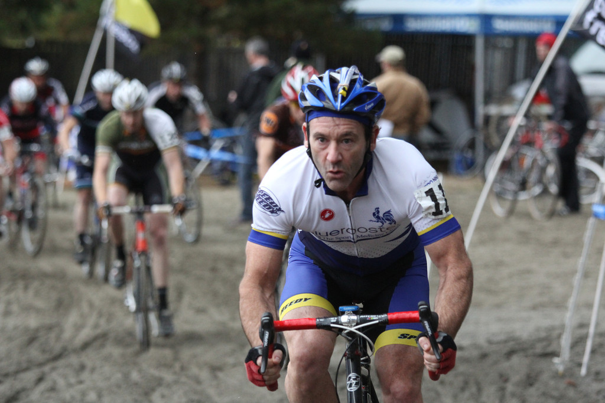
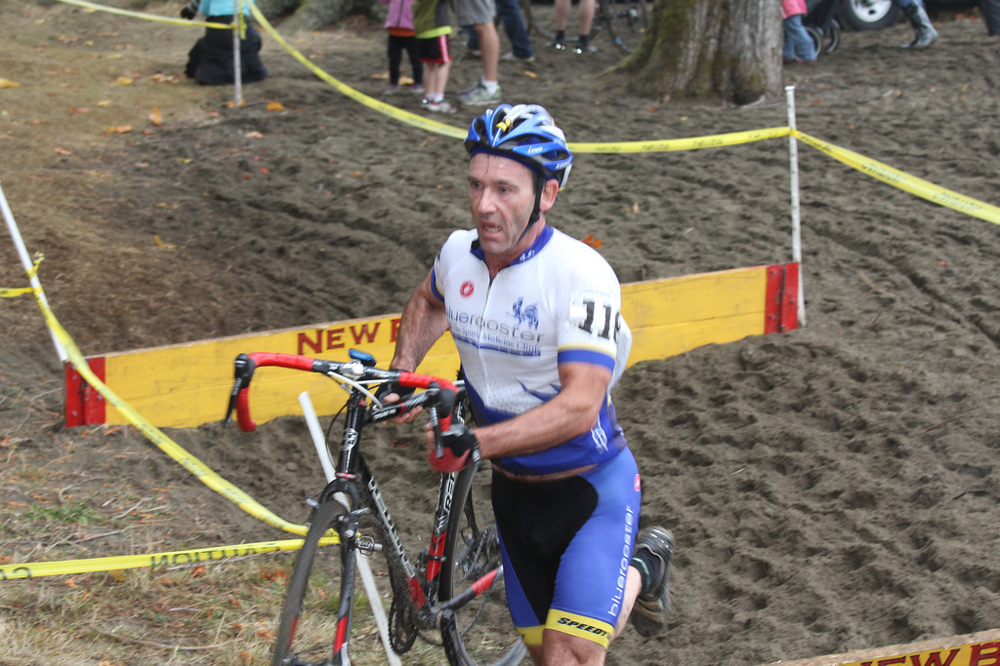
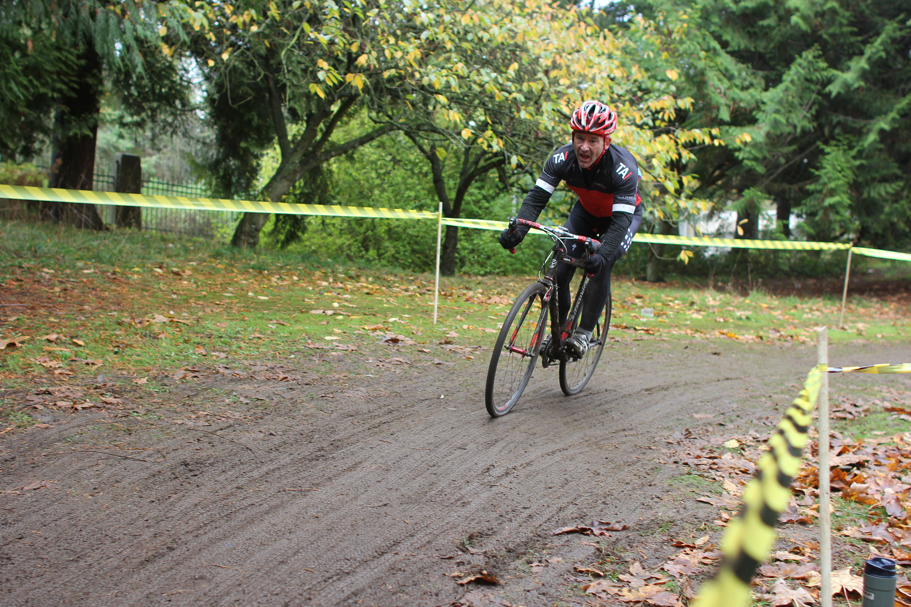
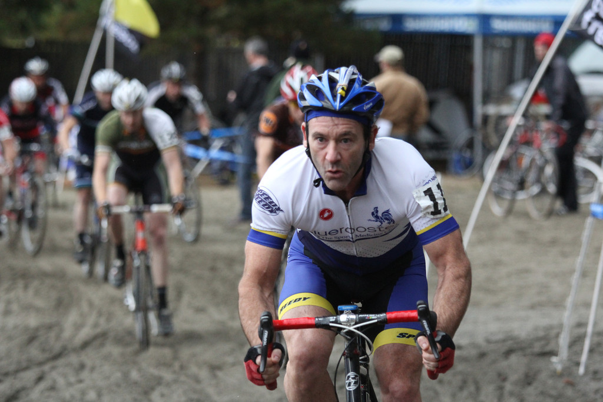
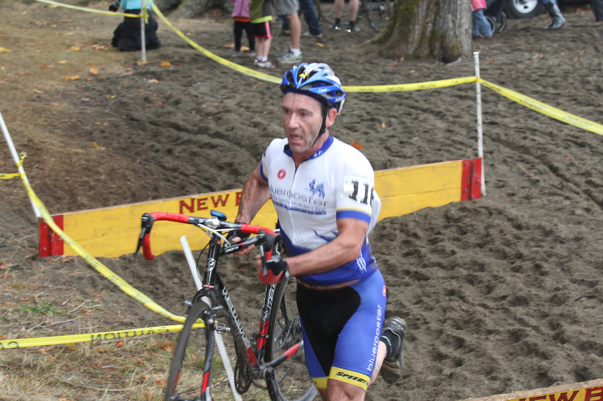
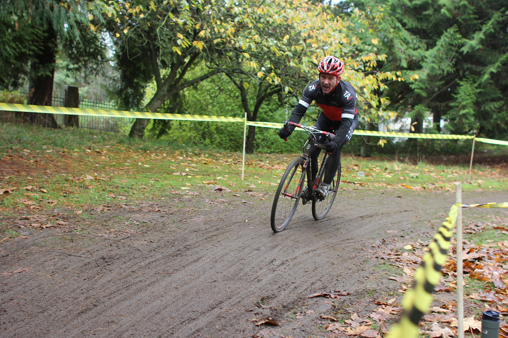
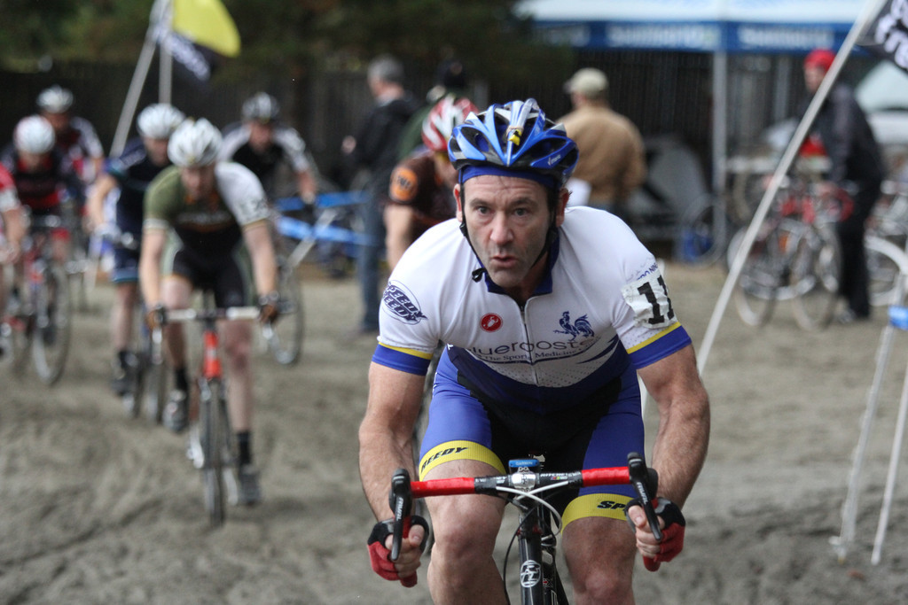
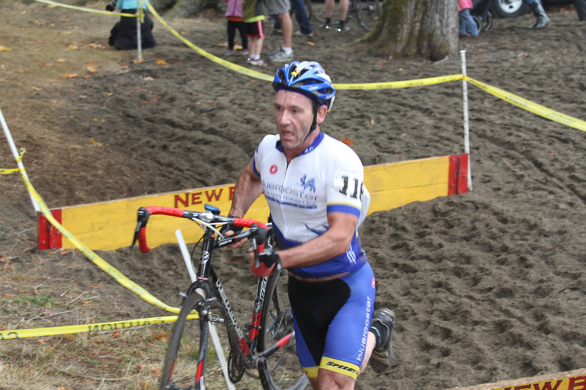
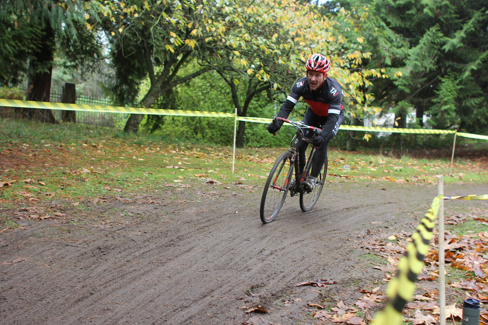
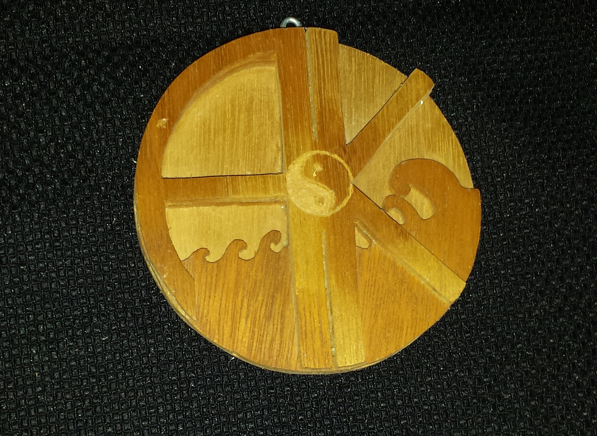

- Road
{kind=link}
{kind=link}
{kind=link}
- Track
{kind=link}
{kind=link}
{kind=link}
{kind=link}
- Cyclocross
{kind=link}
 




I was born on a marine base in Cherry Point North Carolina. We moved several times until second grade when we made our home in Oak Harbor, Washington. In 7th grade my dad bought a TRS80 home computer from Radio Shack. I learned a little Basic programming, enough to move some sprites around and shoot each other.
I moved to Seattle to go to the University of Washington. I couldn't decide what I wanted to do, and took classes in every subject I could think of. I finished with a BA in psychology and still no plans.
I bought a one-way ticket to Japan and found a job coaching international corporations in American culture and language.
After 3 years I came back and went back to UW to complete my third year of Japanese. During this time I met the love of my life and convinced her to marry me. From there, I learned a trade, became a master plumber and started my own business, which I ran for over 15 years.
During the last 5 years I found I wasn't enjoying what I was doing. I spent time exploring what I enjoy doing, and found programing was what I enjoyed doing most. I would write dynamic spread sheets to figure out various data. I finished a couple on line courses in Excell, but I wanted to do more.
My wife, Kim and I are still together. We raised two wonderful children, my son has his own family now, and my daughter recently graduated high school as a National Merit Society member.
During the last 5 years I found I wasn't enjoying my job. I spent time exploring what I enjoy doing, and found programing was what I enjoyed doing most. I would write dynamic spread sheets to figure out various data. I finished a couple on line courses in Excell, but I wanted to do more.
I am currently enrolled in the Web Developement program through EDCC. I sold my business this summer and have begun working through the classes full time. I am really enjoying spending full days at the computer and working through the puzzles programming can provide.
I have signed up to take an extensive course in microsoft SQL. I will be taking a Course like BLOC full stack web developer training. This is a 24 week, full time course.
After all this training I plan to design web applications.

Web browsers, mobile devices Web page authoring in HTML5, CSS, and Javascript. Basic networking components, protocols and server configuration Joomla CMS capable Project management skills for individual and team job tasks
CIW Internet Business Associate CIW Site Development Associate CIW Javascript Specialist Udemy online Basic Java
| 2000 - 2016 | President, Pride Plumbing Company |
| Owned and operated my own plumbing business. Experienced in all aspects of running a small business including bookkeeping, payroll, project management, and marketing. Developed efficient systems for office and employee management. Programed several Excel sheets for productivity and wages. | |
| 1997 - 2000 | Journyman Plumber, Plumbing Joint |
| Moved from apprentice to plumber. Worked independently to trouble shoot and repair all plumbing and heating problems. | |
| 1989 - 1993 | English Teacher, Pheonix Associates |
| Worked as an English teacher and business coach for several large companies in Japan. Lived in Japan, and learned a basic knowledge of Japanese. |
| 1989 | BA in Psychology, University of Washington |
| 1995 | Completed 3rd year of Japanese, University of Washington |
| 2014 | Completed Advanced Excel class, Udemy online |
| 2014 | Completed basic Java, Udemy online |
| 2015 | Currently enrolled in a 44 credit web development course, EdCC |


Woodworking has been a minor interest of mine. I like making small wooden objects and giving them as gifts. It has been a nice creative outlet. I haven’t kept many and didn’t think to take pictures, but I do have a couple examples.
This is a wood relief of a manala for my wife and I. She made a more elaborate painting, but I thought it would be fun to create a little depth to it.
I made this for my daughter when she turned 10. It's a wand with case. (She was really into Harry Potter!)


I have set up this guest book for all the people who have visited my site to sign in and make any comments or offer any advice they wish.
Please fill out as much of the guest book as you feel comfortable doing.
{kind=link}
{kind=link}
{kind=link}
{kind=link}
{kind=link}
{kind=link}
{kind=link}
{kind=link}